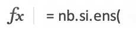
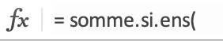

Matchs de Football Nice - Marseille
Le fichier suivant rescence tous les matchs de football de Ligue 1 depuis 2002.
Il s’agit d’un document tenu à jour sur le site L’Equipe.
Les fichier à télecharger: L1.xlsx
Vous aurez besoin pour mener à bien ce travail pratique de revoir:
- les calculs avec un logiciel tableur: TP Excel
- les sommes conditionnelles: TP Excel
Comprendre les descripteurs du tableau
1. Noter sur la fiche reponse le nom de ces descripteurs
2. Ecrire la plage des cellules contenant des valeurs pour chacun de ces descripteurs, sous la forme cellule depart : cellule arrivée
Exemple : Les valeurs du descripteur Ligue sont sur la plage A2:A7221
3. Comment peut-on savoir, en lisant le tableau, quelle est l’équipe qui joue son match à domicile?
4. Retrouver, en parcourant le tableau, les dates des matchs Nice - Marseille (Nice reçoit à domicile) lors des saisons 2002-2003 et 2003-2004. Compter le nombre de victoires de Nice sur ces 2 matchs.
5. Compter le nombre de matchs Nice-Marseille:
- Utiliser la colonne de descripteur equipe_domicile. Utiliser une cellule à la suite du tableau, après la ligne 7221. Dans cette cellule, écrire
= NB.SI.ENS( - Avec l’outil d’aide : compléter les champs pour faire la somme de tous les matchs tels que:
equipe_domicile= “Nice”equipe_exterieur= “Marseille”
Ce qui signifie que vous devrez remplir:
- Plage_critères1: F2:F7221
- Critères1: “Nice”
- …
6. Calculer le score moyen entre ces 2 équipes. Pour faire ceci:
-
Utiliser la colonne de descripteur score_domicile. Utiliser une cellule à la suite du tableau, après la ligne 7221. Dans cette cellule, écrire
= SOMME.SI.ENS( -
Avec l’outil d’aide : compléter les champs pour faire la somme de tous les buts marqués par Nice lorsque l’équipe reçoit Marseille. C’est à dire, lorsque:
- critère 1:
equipe_domicile= “Nice” - critère 2:
equipe_exterieur= “Marseille” - somme_plage: celle de
score_domicile
- critère 1:
-
Faire de même pour les buts marqués par Marseille, en utilisant la colonne sous
score_exterieur -
Enfin: sous le score moyen de Nice: écrire une formule qui calcule le nombre moyen de buts marqués par Nice
-
Faire de même avec Marseille puis compléter le tableau des scores sur votre feuille de reponse.